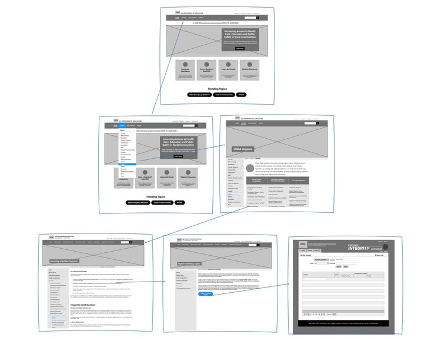

GOVERNMENT WEBSITE RESPONSIVE REDESIGN
This responsive redesign of the United States Department of Agriculture website focuses on improving the information architecture of the existing website, while updating the user interface design to be more modern and clear.
My role: UX/UI Designer
Tools: Miro, Figma, Adobe Xd, Adobe Illustrator, Invision
PROJECT OVERVIEW
Problem
The USDA website has an encyclopedic amount of information, yet users struggle to find the information they need.
The current USDA website is a hub for information about farming, marketing and selling food products, rural development, and more. It attempts to collate the resources of over 20 sub-agencies within the organization. This makes it challenging for users to access the services they need.
Opportunity
How might we improve the user interface and information architecture of the USDA website to improve the experience of its users?
A responsive redesign that improves the information architecture of the existing website, while updating the UI design to be more modern and clear, will make it easier for users of the USDA’s website to find the information they need.
ANALYZING THE CURRENT WEBSITE
The current USDA website attempts to provide both timely information and serve as an educational resource hub. As an organization, the USDA encompasses many sub-agencies that offer direct services.
HEURISTIC ANALYSIS FINDINGS
Through conducting a heuristic analysis, we identified the following issues with the current website:
USER RESEARCH
Before launching into usability tests, we determined a user path for someone that would be seeking a service provided by the USDA. A common association with the USDA is their Organics program, so we developed a persona for a farmer and food producer who would be looking for information about how to apply for organic certification.
USER PATH
WIREFLOW
USABILITY TESTING
GOALS
We conducted five usability tests with the following aims:
- Understand the current process a user goes through to obtain information and apply for organic certification.
- Identify pain points and barriers to completing the process of applying for organic certification.
- Assess if information on how to get organic certified is perceived as organized or intuitive.
TASKS
Testers were asked to complete two consecutive tasks:
- Find out information on how to start the process of becoming organic certified.
- Find out where and how to complete the application to become organic certified.
WIREFRAME
The wireframes were designed to address some of the most prominent issues with the current website that were identified in the usability testing.
Overall, design choices such as a full screen dropdown for the primary navigation and the inclusion of vertical and horizontal scrolling were to ensure a consistent experience between desktop and mobile.


UI STYLE
When the USDA was established during the Lincoln administration, it was referred to as “The People’s Department” — that remains a fitting moniker. The USDA’s updated UI is designed to be modern and simple, while maintaining its approachability. The style of the website prioritizes clean lines to delineate areas of content. While used sparingly, graphics and the carrot motif are intended as visual flare, and photographs showcase the American heartland.
TESTING AND ITERATIONS
I conducted three rounds of testing, one with the wireframe, and two with the high fidelity design. Each round of testing highlighted a few key issues mainly related to functionality and terminology. Testers during the first and second round identified some issues with having both a vertical and horizontal scroll function; a design choice that was made for consistency between the desktop and mobile experiences. Testers during the second round responded positively to the information hierarchy, but had feedback on the UI design and terminology. In the third round of testing, feedback was minimal and testers found it easy to navigate through the site to the information they were seeking!


{kind=link}
{kind=link}
{kind=link}
SUMMARY
My redesign of the USDA website presented an opportunity to freshen up and modernize an old institution. While it seems that the current website was updated not that long ago to reflect more recent UI trends, there are still some structural issues that may be hard for the agency to address without completely overhauling the whole USDA system website, and sub-agency sites too.
In future iterations, I would like to further address some of the feedback I received on terminology. For instance, “organics” by the USDA’s definition is often regarding how a product or farming operation is marketed or classified — so the Agricultural Marketing Services agency holds information about organics. That might be confusing to someone who thinks of “organic” as a farming technique and not a marketing strategy.
I would also be interested in exploring an interactive element or navigational system that directs users towards content based on audience type, such as “Farmer” “Nutritionist” “Educator” “Parent”…etc. So that a user’s whole engagement with the website is more customized.